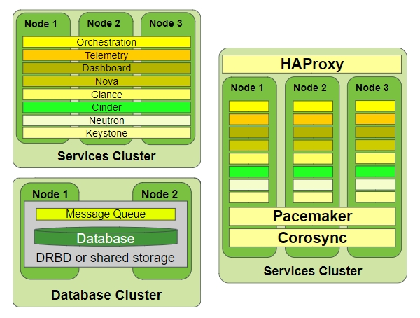
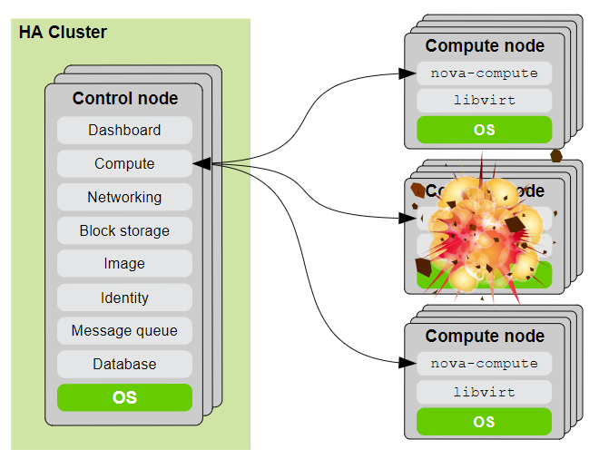
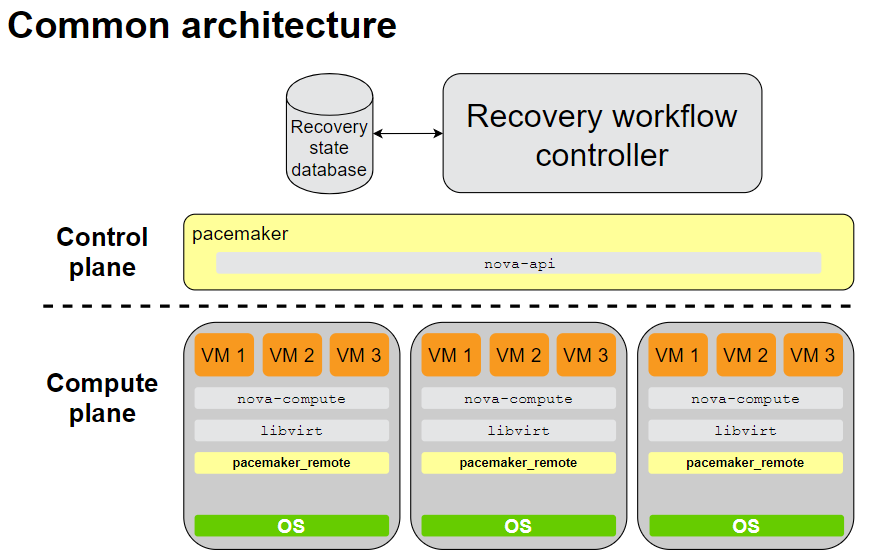
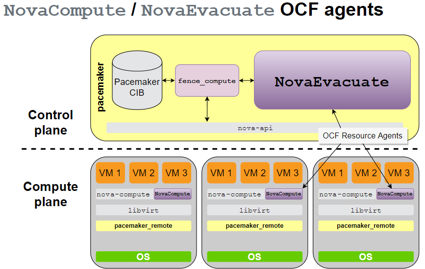

SlidesSourceCompute Node HA in OpenStack - Theory (HO128394.pdf) Compute Node HA in OpenStack - Hands On (HO128394-lab.pdf) Compute Node HA Training (May 2016) (http://suse.github.io/compute-ha-training/#/about) Summary# Typical HA Control Plane - Automatic restart of controller services - Increases uptime of cloud  # Compute failure  # When is Compute HA important? - Pets vs Cattle - Pet: Service downtime when a pet dies - Pet: VM instances often stateful, with mission-critical data - Pet: Needs automated recovery with data protection - Cattle: Service resilient to instances dying - Cattle: Stateless, or ephemeral (disposable storage) - Cattle: Already ideal for cloud ?but automated recovery still needed! # If compute node is hosting cattle - to handle failures at scale, we need to automatically restart VMs somehow. # If compute node is hosting pets - we have to resurrect very carefully in order to avoid any zombie pets! # Do we really need compute HA in OpenStack? - Compute HA needed for cattle as well as pets - Valid reasons for running pets in OpenStack - Manageability benefits - Want to avoid multiple virtual estates - Too expensive to cloudify legacy workloads # Architectural Challenges - Configurability - Compute Plane Needs to Scale - Full Mesh Clusters Don't Scale # Addressing Scalability - The obvious workarounds are ugly! - Multiple compute clusters introduce unwanted artificial boundaries - Clusters inside / between guest VM instances are not OS-agnostic, and require cloud users to modify guest images (installing & configuring cluster software) - Cloud is supposed to make things easier not harder!  # Compute HA in SUSE OpenStack Cloud  - OCF (Open Cluster Format) - Pros Ready for production now Commercially supported by SUSE RAs upstream in openstack-resource-agents repo: https://github.com/openstack/openstack-resource-agents/tree/master/ocf - Cons Known limitations (not bugs): Only handles failure of compute node, not of VMs, or nova-compute Some corner cases still problematic, e.g. if nova fails during recovery # Shared Storage - Where can we have Shared Storage? (Two key areas) /var/lib/glance/images on controller nodes /var/lib/nova/instances on compute nodes - When do we need Shared Storage? If /var/lib/nova/instances is shared, VM's ephemeral disk will be preserved during recovery Otherwise: VM disk will be lost, recovery will need to rebuild VM from image Either way, /var/lib/glance/images should be shared across all controllers (unless using Swift / Ceph) Otherwise nova might fail to retrieve image from glance |